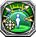
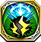

Global RS
Global Resonance Skills available to every unit that has an RS Slot. Cannot be used by pure PoL Units, but can be used by LR PoL units.
3104413

Ais Wallenstein |
黙然の剣技 |
|---|---|
| 自身のHPが200上昇し、雷属性ユニットから受けるダメージを15%減少する | |
202713

Acht |
太陽を仰ぐ隻眼 |
| タガタメユニット装備時のみ発動。自身のHPが1000上昇し、自身の行動終了時、隣接する味方ユニットの移動不可を治癒する | |
|
5202713
Acht |
 ロストブルーの月
ロストブルーの月
|
| 自身のHPが500上昇する。また、自身の淘汰値が15以上かつタガタメ十戒衆ユニットの場合、自身の周囲3マス以内に入った敵ユニットに対してデコイ効果を持つ | |
501014

Akane Tsunemori |
 天真爛漫な監視官
天真爛漫な監視官
|
| PSYCHO-PASS サイコパス ２コラボユニット装備時のみ発動。自身のHPが1000上昇し、クエスト開始から3ターンの間、デュエル時、相手の魔防を50%下げて攻撃する | |
502913

Albell |
マスクの下の微笑 |
| 光属性ユニットとのデュエル時、自身の魔攻が100上昇する | |
401613

Almira |
完璧鷹匠 |
| タガタメユニット装備時のみ発動。自身のHPが1000上昇し、自身の行動終了時、隣接する味方ユニットの出血を治癒する | |
|
302713
Amaterasu |
天水の輝き |
| シノビナユニット装備時のみ発動。自身のHPが1000上昇し、自身の行動終了時、隣接する味方ユニットの麻痺を治癒する | |
5302713

Amaterasu |
天を照らす陽 |
| 自軍フェーズ開始時、自身を含む周囲2マス以内の味方ユニットに1ターンの間、コマンド・解放スキルによって即時発生するダメージを30%軽減する効果を付与する | |
5100714

Arondight |
激怒の解放 |
| 自軍ユニットが雷属性とのデュエル時、相手に与えるダメージが20%上昇する | |
5400113

Artemis |
 黒式・色欲ヒメシ執行官
黒式・色欲ヒメシ執行官
|
| 現在のHPが2000以上のユニットとのデュエル時、自身の魔が30%上昇する | |
5105213

Azusa |
スライム退治で得た最強 |
| 自身を除く、味方ユニット1体のコマンドスキルの使用回数を1回分回復する。さらにHP30%分回復する | |
5105223

Azusa |
 スライム殺しのオーラ
スライム殺しのオーラ
|
| スライム倒して300年コラボユニット装備時のみ発動。防御時に確率発動。敵ユニットから受けるダメージを無効化する ※麻痺時も発動する | |
3104113

Beagallta |
 メルティングポット・慟哭
メルティングポット・慟哭
|
| 自身のHPが100上昇し、回避率下限が10%になる | |
|
3104123
Beagallta |
メルティングポット・慟哭
|
| 自身のHPが100上昇し、回避率下限が10%になる | |
|
3104133
Beagallta |
メルティングポット・慟哭
|
| 自身のHPが100上昇し、回避率下限が10%になる | |
|
3104143
Beagallta |
メルティングポット・慟哭
|
| 自身のHPが100上昇し、回避率下限が10%になる | |
|
3104153
Beagallta |
メルティングポット・慟哭
|
| 自身のHPが100上昇し、回避率下限が10%になる | |
|
3104163
Beagallta |
メルティングポット・慟哭
|
| 自身のHPが100上昇し、回避率下限が10%になる | |
3104173

Beagallta |
 キャンディポット・咆哮
キャンディポット・咆哮
|
| 自身のHPが100上昇し、デュエル時に相手のデュエルスキル発動率が20%下降する | |
41041001

Beagallta |
メルティングポット・別腹 |
| 自身のHPが80、魔が12上昇する | |
|
41041002
Beagallta |
メルティングポット・別腹 |
| 自身のHPが80、魔が12上昇する | |
|
41041003
Beagallta |
メルティングポット・別腹 |
| 自身のHPが80、魔が12上昇する | |
|
41041004
Beagallta |
メルティングポット・別腹 |
| 自身のHPが80、魔が12上昇する | |
|
41041005
Beagallta |
メルティングポット・別腹 |
| 自身のHPが80、魔が12上昇する | |
|
41041006
Beagallta |
メルティングポット・別腹 |
| 自身のHPが80、魔が12上昇する | |
52000813

Blackai |
人格変異
|
| 特殊または光属性ユニットとのデュエル時、相手の物攻・魔攻・デュエルスキル発動率を30%下降させる | |
103313

Chloe |
緋炎の輝晶 |
| タガタメユニット装備時のみ発動。自身のHPが1000、力・魔・守・精・速・技・運が2上昇する | |
5402313

Chris Yukine |
イチイバルの聖詠 |
| 自身に3ターンの間、相手から受けるダメージを30%、相手が弓ユニットの場合は60%減少する効果を付与する。 | |
52000213

Daphne |
宝盾の担い手 |
| ダフネ装備時のみ発動。自身のHPが1000上昇し、相手のデュエルスキル発動率を30%減少させる | |
3101813

Denpa |
でんぱの絶唱 |
| 下記に該当するコラボユニットのうち、重複しない4体以上が自軍にいる場合、自軍ユニットの技・運が20、速が10上昇する。 ※炎属性かつ銃ユニット、炎属性かつ剣ユニット、氷属性かつ斧ユニット、氷属性かつ槍ユニット、風属性かつ弓ユニット、風属性かつ斧ユニット、光属性かつ剣ユニット、闇属性かつ杖ユニット、闇属性かつ槍ユニット、闇属性かつ銃ユニット | |
|
3602713
Emilia |
 誓約の履行
誓約の履行
|
| 自身のHPが100上昇し、闇属性に与えるダメージが50%増加する。光属性ユニット装備時、さらにHPが150上昇する | |
3602723

Emilia |
永遠の約束 |
| 自軍Re:ゼロコラボユニットのHPが80、力・魔・守・精が3上昇する※自軍に同じスキルを装備しているユニットが多いほど、重複して効果が発動する | |
602913

Emmer |
 慈愛の御心
慈愛の御心
|
| 闇属性ユニットとのデュエル時、自身の魔攻が100上昇する | |
6602913

Emmer |
エンメルの懸命 |
| 杖ユニット装備時のみ発動。攻撃時、相手に1撃ごとに1ターンの間、「デュエル時、自身が受けるダメージが15%増加する」効果を付与する | |
603313

Fuelie |
 不憎のお呪い
不憎のお呪い
|
| タガタメユニット装備時のみ発動。自身のHPが1000上昇し、自身の行動終了時、隣接する味方ユニットの封印を治癒する | |
|
502813
Gabriel |
純潔の白百合 |
| ガブリエル装備時のみ発動。敵ユニットから受けるダメージを2撃まで無効にし、発動時、自身に魔が20%上昇する効果を付与する | |
52000313

Gjallarhorn |
救いある告笛 |
| 特殊ユニット装備時のみ発動。自軍フェーズ開始時、1ターンの間、自身の周囲3マス以内の敵ユニットの速を30%下降させる | |
52000513

Gleipnir |
救いある枷縛 |
| 特殊ユニット装備時のみ発動。自軍フェーズ開始時、1ターンの間、自身の周囲3マス以内の敵ユニットの技を30%下降させる | |
5603413

Hachikuji Mayoi |
二階級特進 |
| 自身のHPが200上昇し、氷属性ユニットから受けるダメージを1撃まで無効にする | |
5303313

Hanekawa Tsubasa |
 ストレスの権化
ストレスの権化
|
| 自身のHPが200上昇し、闇属性ユニットから受けるダメージを1撃まで無効にする | |
3603113

Hestia |
ファミリアの絆 |
| 自身のHPが200上昇し、闇属性ユニットから受けるダメージを15%減少する | |
5604013

Halkara |
 お詫びのキノコフルコース
お詫びのキノコフルコース
|
| デュエル時、自身が有利属性の場合、与えるダメージが50%増加する | |
5303513

Hibiki Tachibana |
ガングニールの聖詠 |
| 自身に3ターンの間、相手から受けるダメージを30%、相手が槍ユニットの場合は60%減少する効果を付与する | |
502313

Hiiragi |
恋心クノイチ |
| シノビナユニット装備時のみ発動。自身のHPが1000上昇し、自身の行動終了時、隣接する味方ユニットの行動不可を治癒する | |
52000413

Hlidskjalf |
救いある俯瞰 |
| 特殊ユニット装備時のみ発動。自軍フェーズ開始時、1ターンの間、自身の周囲3マス以内の敵ユニットの運を30%下降させる | |
3501313

Homura Akemi |
極めつけのイレギュラー |
| 自身のHPが200上昇する。闇属性ユニット装備時、さらにHPが300上昇する | |
301314

Il-Dana |
神々の聖光 |
| イルダーナ装備時のみ発動。自軍フェーズ開始時、自身を除く隣接する味方の光属性ユニット全員に1ターンの間、物防・魔防が50%、物攻・魔攻が30%、運・技が10%、速が5%上昇する効果を付与する | |
5203213

Kanbaru Suruga |
 神原Ω
神原Ω
|
| 自身のHPが200上昇し、風属性ユニットから受けるダメージを1撃まで無効にする | |
5105013

Kaguramea |
 ノンストップトーク
ノンストップトーク
|
| 氷属性ユニットまたは斧ユニットとのデュエル時、相手の物攻・魔攻・デュエルスキル発動率を30%下降させる ※氷属性かつ斧ユニットの場合、物攻・魔攻・デュエルスキル発動率が重複して下降する | |
5105023

Kaguramea |
地獄企画の猛者 |
| デュエル時に炎・風・雷・氷属性ユニットから受けるダメージを20%軽減する | |
101914

Kanon |
 大陸の守護者
大陸の守護者
|
| 闇属性ユニットとのデュエル時、自身の物攻が100上昇する | |
503513

Kaya |
追憶の探求者 |
| 風属性ユニットとのデュエル時、自身の魔攻が100上昇する | |
302313

Kikyo |
輪廻の血 |
| シノビナユニット装備時のみ発動。自身のHPが1000上昇し、自身の行動終了時、隣接する味方ユニットの忘却を治癒する | |
52000713

Kizuna Ai |
バーチャル世界の親分 |
| 特殊ユニットまたは闇属性ユニットとのデュエル時、相手の物攻・魔攻・デュエルスキル発動率を30%下降させる | |
52000723

Kizuna Ai |
みんなとつながるために
|
| 炎・風・雷・氷属性ユニットとのデュエル時、相手のデュエルスキル発動率を20%下降させる | |
5603513

Kushinada |
櫛姫の御節介 |
| シノビナユニット装備時のみ発動。自身のHPが1000、力・魔・守・精・速・技・運が2上昇する | |
|
3301513
Kyoko Sakura |
切望する奇跡 |
| 自身のHPが200上昇する。炎属性ユニット装備時、さらにHPが300上昇する | |
5104913

Lakina |
セイブザオーダー |
| 自軍ユニットが光属性とのデュエル時、相手に与えるダメージが20%上昇する | |
3402113

Liliruca Arde |
ヘスティア・ファミリアの参謀 |
| 自身のHPが200上昇し、氷属性ユニットから受けるダメージを15%減少する | |
5200314

Labrys |
 快楽の解放
快楽の解放
|
| 自軍ユニットが炎属性とのデュエル時、相手に与えるダメージが20%上昇する | |
52001013

Laika |
一番弟子の矜持
|
| 斧・槍・弓・銃・特殊ユニットとのデュエル時、自身の物攻・命中を30%上昇し、相手のデュエルスキル発動率を30%減少させる | |
5300143

Longinus |
黒式・羨望スル執行官 |
| PSYCHO-PASS サイコパス ２コラボユニット装備時のみ発動。自身のHPが1000、力・魔・守・精・速・技・運が2上昇する。 | |
503013

Lucille |
幻想具現 |
| 氷属性ユニットとのデュエル時、自身の魔攻が100上昇する | |
5604113

Mishiro Shirayuki |
 純白の清掃術
純白の清掃術
|
| 自軍フェーズ開始時、自身を含む周囲3マス以内の味方ユニットに毒・麻痺・出血への耐性を1ターンの間、それぞれ1回分ずつ付与する ※この耐性はデュエル時以外の各状態異常に対しても効果を発揮する | |
3401113

Madoka Kaname |
少女の想い |
| 自身のHPが200上昇する。光属性ユニット装備時、さらにHPが300上昇する | |
3501413

Mami Tomoe |
静粛の乙女 |
| 自身のHPが200上昇する。 雷属性ユニット装備時、さらにHPが300上昇する | |
5100143

Masamune |
黒式・憤怒セシ執行官 |
| 自身から攻撃を仕掛けたデュエル後、1ターンの間、自身の技を15%上昇させる | |
5502513

Megumin |
 銀世界の爆裂道
銀世界の爆裂道
|
| 銃ユニット装備時のみ発動。自軍フェーズ開始時、自身に1ターンの間、デュエルスキルによるダメージが20%増加する効果を付与する | |
503413

Mela |
タイムトラベラー |
| タガタメユニット装備時のみ発動。自身のHPが1000上昇し、自身の行動終了時、隣接する味方ユニットの麻痺を治癒する | |
503423

Mela |
怠惰の虚刻 |
| 炎属性ユニットから受けるダメージを1撃まで無効にし、その後受けるダメージを20%軽減する | |
5603713

Miku Kohinata |
 神獣鏡の聖詠
神獣鏡の聖詠
|
| 自身に3ターンの間、相手から受けるダメージを30%、相手が杖ユニットの場合は60%減少する効果を付与する | |
5302533

Minerva |
零式・白魔の知性 |
| 自軍雷属性ユニットのHPが200、全パラメータが1上昇する ※自軍に同じスキルを装備しているユニットが多いほど、重複して効果が発動する | |
202613

Miuna |
名匠の後継者 |
| 風属性ユニットとのデュエル時、自身の物攻が100上昇する | |
3104013

Morallta |
 メルティングポット・恍惚
メルティングポット・恍惚
|
| 自身のHPが100上昇し、デュエルスキル発動率が10%上昇する | |
|
3104023
Morallta |
メルティングポット・恍惚
|
| 自身のHPが100上昇し、デュエルスキル発動率が10%上昇する | |
|
3104033
Morallta |
メルティングポット・恍惚
|
| 自身のHPが100上昇し、デュエルスキル発動率が10%上昇する | |
|
3104043
Morallta |
メルティングポット・恍惚
|
| 自身のHPが100上昇し、デュエルスキル発動率が10%上昇する | |
|
3104053
Morallta |
メルティングポット・恍惚
|
| 自身のHPが100上昇し、デュエルスキル発動率が10%上昇する | |
|
3104063
Morallta |
メルティングポット・恍惚
|
| 自身のHPが100上昇し、デュエルスキル発動率が10%上昇する | |
3104073

Morallta |
キャンディポット・残虐 |
| 自身のHPが100上昇し、デュエルスキルのダメージが20%上昇する | |
41040001

Morallta |
メルティングポット・間食 |
| 自身のHPが80、力が12上昇する | |
|
41040002
Morallta |
メルティングポット・間食 |
| 自身のHPが80、力が12上昇する | |
|
41040003
Morallta |
メルティングポット・間食 |
| 自身のHPが80、力が12上昇する | |
|
41040004
Morallta |
メルティングポット・間食 |
| 自身のHPが80、力が12上昇する | |
|
41040005
Morallta |
メルティングポット・間食 |
| 自身のHPが80、力が12上昇する | |
|
41040006
Morallta |
メルティングポット・間食 |
| 自身のHPが80、力が12上昇する | |
5603613

Nero |
 黒の蜃気楼 |
| 自身のHPが200上昇し、光属性ユニットから受けるダメージを15%減少する | |
5602033

Ness |
零式・白魔の節制 |
| 自軍氷属性ユニットのHPが200、全パラメータが1上昇する ※自軍に同じスキルを装備しているユニットが多いほど、重複して効果が発動する | |
5104813

Oshino Shinobu |
鉄血にして熱血にして冷血 |
| 自身のHPが200上昇し、光属性ユニットから受けるダメージを1撃まで無効にする | |
5400814

Othinus |
 歓喜の解放
歓喜の解放
|
| 自軍ユニットが氷属性とのデュエル時、相手に与えるダメージが20%上昇する | |
5202213

Pangu |
 崩壊世界を断つ斧
崩壊世界を断つ斧
|
| 自身に3ターンの間、相手から受けるダメージを30%、相手が斧ユニットの場合は60%減少する効果を付与する。 | |
3104513

Ryu Lion |
アストレアの眷族 |
| 自身のHPが200上昇し、炎属性ユニットから受けるダメージを15%減少する | |
5103633

Ragnarok |
光束ねし御旗 |
| ラグナロク装備時のみ発動。自身のHPが1000、守・精が50、運が20上昇する | |
|
3503313
Ram |
 ラムの過酷な教育 |
| 自身のHPが100上昇し、雷属性に与えるダメージが50%増加する。風属性ユニット装備時、さらにHPが150上昇する | |
3503323

Ram |
 一鬼当千
一鬼当千
|
| 自身のHPが100上昇し、氷属性に与えるダメージが50%増加する。雷属性ユニット装備時、さらにHPが150上昇する | |
3503333

Ram |
鬼嫁の微笑み |
| 自身のHPが100上昇し、風属性に与えるダメージが50%増加する。炎属性ユニット装備時、さらにHPが150上昇する | |
3202913

Rem |
レムの特権
|
| 自身のHPが100上昇し、炎属性に与えるダメージが50%上昇する。氷属性ユニット装備時、さらにHPが150上昇する | |
3202923

Rem |
最後の鬼の角 |
| 自身のHPが100上昇し、光属性に与えるダメージが50%増加する。闇属性ユニット装備時、さらにHPが150上昇する | |
3202933

Rem |
無償の愛 |
| 自身のHPが200上昇し、デュエル時、自身が有利属性の場合、与えるダメージが50%上昇する | |
5301014

Rhongomyniad |
悲哀の解放
|
| 自軍ユニットが闇属性とのデュエル時、相手に与えるダメージが20%上昇する | |
3203013

Risanautr |
クロノスの時針 |
| デュエル時、騎乗ユニットへのダメージが125%威力となる。リサナウト装備時は、ダメージが200%威力となる | |
3203023

Risanautr |
クロノスの追想 |
| 隣接する敵ユニットとのデュエル時、自身の物攻が35上昇する。さらに、リサナウト装備時、騎乗ユニットへのダメージが200%威力となる | |
5203013

Risanautr |
クロノスの観測 |
| リサナウト装備時のみ発動。自身のHPが1000、守・精が50、運が20上昇し、騎乗ユニットへのダメージが200%威力となる | |
|
42030001
Risanautr |
星霜『ふくよかなる予言』 |
| リサナウトが装備した時、速・運が100%下降し、クエスト開始から2ターンの間、物防・魔防が500上昇する | |
602113

Rizbeth |
すべての痛みを癒す力 |
| タガタメユニット装備時のみ発動。自身のHPが500上昇し、自身の行動終了時、隣接する味方ユニットの挑発を治癒する | |
602813

Rofia |
 お砂糖チャージ
お砂糖チャージ
|
| 炎属性ユニットとのデュエル時、自身の魔攻が100上昇する | |
202413

Rosa |
魅惑の赤と黒 |
| 光属性ユニットとのデュエル時、自身の物攻が100上昇する | |
3503613

Sanjono Haruhime |
 狐人の冒険譚
狐人の冒険譚
|
| 自身のHPが200上昇し、風属性ユニットから受けるダメージを15%減少する | |
5503813

Sengoku Nadeko |
ブルマーとスクール水着 |
| 自身のHPが200上昇し、雷属性ユニットから受けるダメージを1撃まで無効にする | |
5104713

Senjyogahara Hitagi |
恋煩い |
| 自身のHPが200上昇し、炎属性ユニットから受けるダメージを1撃まで無効にする | |
103213

Sakura |
始まりの子 |
| シノビナユニット装備時のみ発動。自身のHPが1000上昇し、自身の行動終了時、隣接する味方ユニットの幻惑を治癒する | |
|
302913
Sango |
海の箱入り |
| シノビナユニット装備時のみ発動。自身のHPが1000上昇し、自身の行動終了時、隣接する味方ユニットの移動不可を治癒する | |
3102013

Sayaka Miki |
純粋なる友情 |
| 自身のHPが200上昇する。氷属性ユニット装備時、さらにHPが300上昇する | |
202313

Sejna |
ラブリー師範 |
| タガタメユニット装備時のみ発動。自身のHPが1000上昇し、自身の行動終了時、隣接する味方ユニットの毒を治癒する | |
|
103913
Setsuna |
非業の剣豪 |
| 雷属性ユニットとのデュエル時、自身の物攻が100上昇する | |
103923

Setsuna |
嫉妬の刀刃
|
| 風属性ユニットから受けるダメージを1撃まで無効にし、その後受けるダメージを20%軽減する | |
5303613

Shirasagi |
お告げは絶対 |
| シノビナユニット装備時のみ発動。自身のHPが1000、守・精が100、運が20上昇する | |
104313

Siewa |
絢爛たる双剣 |
| タガタメユニット装備時のみ発動。自身のHPが1000上昇し、自身の行動終了時、隣接する味方ユニットの幻惑を治癒する | |
5303713

Tamaki Inuyama |
問題児の対処法
|
| 剣ユニットまたは炎属性のユニットとのデュエル時、相手の物防・魔防・デュエルスキル発動率を30%下降させる ※炎属性かつ剣ユニットの場合、物防・魔防・デュエルスキル発動率が重複して下降する | |
5303723

Tamaki Inuyama |
シークレットゾーン |
| デュエル時、炎・風・雷・氷属性ユニットに与えるダメージが20%増加する | |
602213

Tsukuyomi |
夜を統べる月 |
| シノビナユニット装備時のみ発動。自身のHPが1000上昇し、自身の行動終了時、隣接する味方ユニットの挑発を治癒する | |
3101413

Tyrhung |
 女王の帰還
女王の帰還
|
| 自身のHPが100上昇し、自身から攻撃を仕掛けた時、10%の確率で自身に追撃が発生する。剣ユニット装備時、自身から攻撃を仕掛けた時、20%の確率で自身に追撃が発生する ※相手が追撃を封じるスキルを所持している場合は発動しない | |
5101413

Tyrhung |
黒式・強欲ナル執行官 |
| PSYCHO-PASS サイコパス ２コラボユニット装備時のみ発動。クエスト開始から4ターンの間、追撃が発生する場合、自身の攻撃直後に高確率で追撃を行うようになる | |
6101413

Tyrhung |
差し伸べられた手 |
| 剣ユニット装備時のみ発動。デュエル後、相手および相手と隣接する敵ユニットに自身の与えたダメージの5%分のダメージを与える ※デュエル後のダメージで撤退させられる | |
601213

Uroboros |
大陸の観測者 |
| タガタメユニット装備時のみ発動。自身のHPが1000上昇し、自身の行動終了時、隣接する味方ユニットの封印を治癒する | |
|
602613
Vier |
 気まぐれな香幻
気まぐれな香幻
|
| タガタメユニット装備時のみ発動。自身のHPが1000上昇し、自身の行動終了時、隣接する味方ユニットの行動不可を治癒する | |
|
5105313
Warabe Hoozuki |
 収まらぬ笑い上戸
収まらぬ笑い上戸
|
| デュエル後、与えたダメージの5%分、自身のHPを回復する | |
103713

Yaurasu |
不滅の薔薇 |
| 炎属性ユニットとのデュエル時、自身の物攻が100上昇する | |
501114

Yayoi Kunizuka |
 冷静沈着な執行官
冷静沈着な執行官
|
| PSYCHO-PASS サイコパス ２コラボユニット装備時のみ発動。自身のHPが1000上昇し、相手のデュエルスキル発動率を30%減少させる | |
52000613

Yggdrasil |
キラーズの胎動 |
| 自身が受けるダメージを25%軽減する。自身が有利属性の場合、25%ではなく50%軽減する | |
103113

Yomi |
神鬼の器 |
| タガタメユニット装備時のみ発動。自身のHPが500上昇し、自身の行動終了時、隣接する味方ユニットの忘却を治癒する | |
401813

Yomi |
 闇の眷属
闇の眷属
|
| シノビナユニット装備時のみ発動。自身のHPが1000上昇し、自身の行動終了時、隣接する味方ユニットの封印を治癒する | |
401513

Yuri |
守り人 |
| シノビナユニット装備時のみ発動。自身のHPが1000上昇し、自身の行動終了時、隣接する味方ユニットの毒を治癒する | |
401523

Yuri |
渚の守り人 |
| シノビナユニット装備時のみ発動。自身のHPが1000上昇し、自身の行動終了時、隣接する味方ユニットの出血を治癒する | |
603013

Zwei |
 一緒におさんぽ
一緒におさんぽ
|
| 雷属性ユニットとのデュエル時、自身の魔攻が100上昇する | |
5203313

Nurikabe |
身を滅ぼす献身 |
| 自身のHPが1000、守・精が100上昇する | |
5303813

Takiyashahime |
えすこぉとへの羨望 |
| 自身のHPが1000、力・魔が50上昇する |